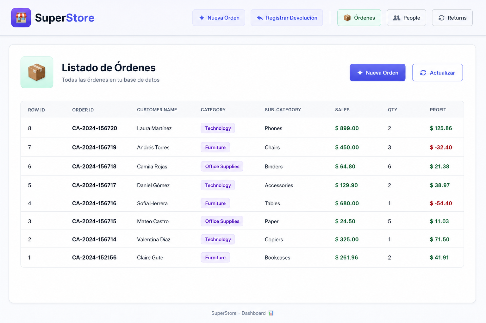
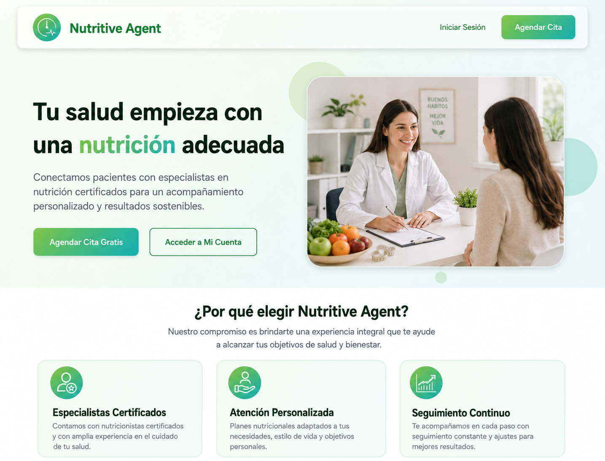
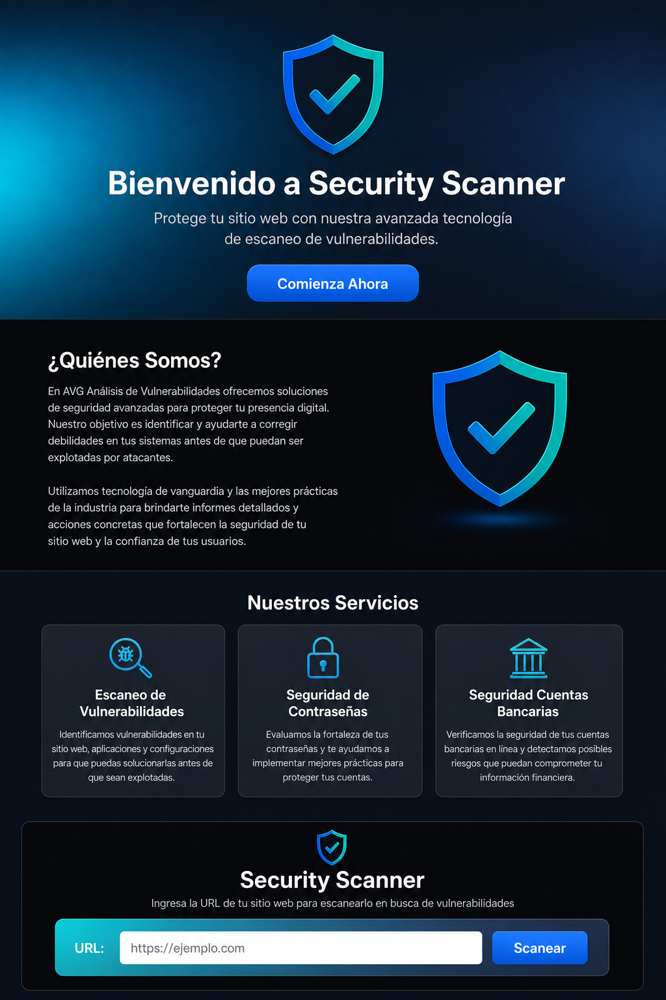
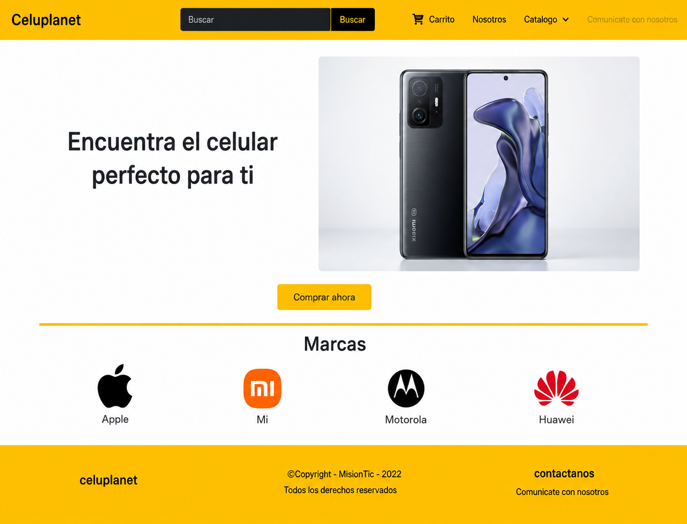
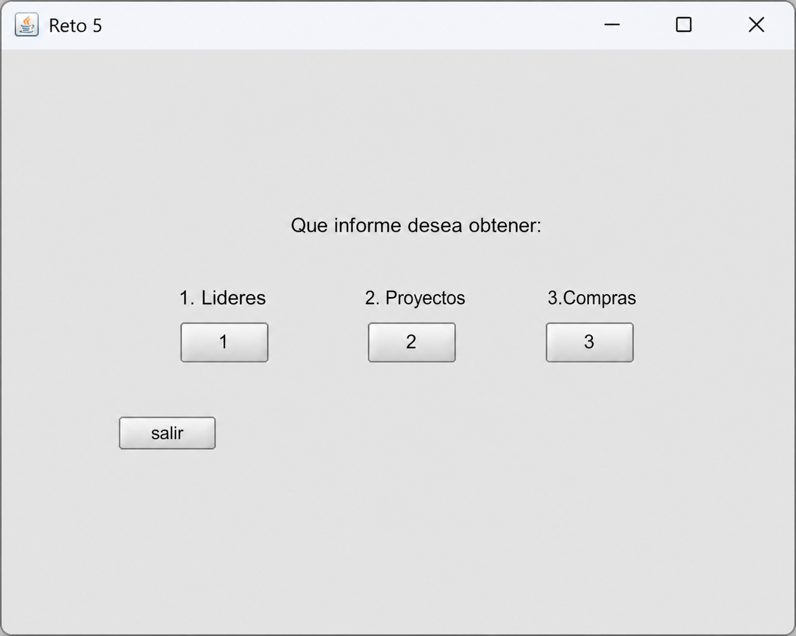

C# & .NET
Backend y lógica de negocio con .NET Framework y .NET Core. Arquitectura por capas, principios SOLID y código mantenible.
EL MOTOR DE LA APLICACIÓNDESARROLLADOR · MANIZALES, COLOMBIA
Conecto desarrollo, calidad y datos para construir soluciones útiles. Soy desarrollador Full Stack y parte de DifferentDev, una marca que nace de desarrolladores con ganas de crear valor.
01 / MI BASE TÉCNICA
Mi experiencia principal conecta la lógica de negocio, la interfaz y los datos.
Backend y lógica de negocio con .NET Framework y .NET Core. Arquitectura por capas, principios SOLID y código mantenible.
EL MOTOR DE LA APLICACIÓNInterfaces y módulos web con TypeScript. Experiencia en flujos de check-in y aplicaciones conectadas a servicios.
LA EXPERIENCIA DEL USUARIOConsultas, procedimientos almacenados y modelado de datos. Desde sistemas transaccionales hasta ETL y análisis.
LA INFORMACIÓN QUE DA VALORPython · Selenium · Power BI · Azure · Git · Docker · Redis · Datadog
02 / PROYECTOS
Desarrollo web, datos y herramientas para resolver necesidades concretas. Explora las capturas de cada proyecto.

Desarrollo web
Aplicación web para gestionar pedidos, personas y devoluciones mediante una interfaz Angular conectada a una API externa.
SPA de Angular que consume una API externa. El código del servicio y su almacenamiento no están incluidos en la carpeta del frontend, por lo que la base de datos utilizada no está confirmada.

Aplicación web
Aplicación web para gestionar profesionales, disponibilidad y citas.
Estructura de Laravel con Jetstream e Inertia, combinando el backend y la interfaz Vue en un mismo proyecto.

Aplicación web
Aplicación web para analizar vulnerabilidades de sitios web y generar reportes.
Arquitectura cliente-servidor, con una interfaz Next.js conectada a un analizador desarrollado en Python.

Catálogo web
Aplicación web para gestionar un catálogo de celulares.
Aplicación Spring MVC organizada en controladores, servicios, repositorios y modelos, con páginas generadas desde el servidor.

Aplicación de escritorio
Aplicación de escritorio para consultar informes de proyectos de construcción, líderes y compras.
Aplicación Java de escritorio con ventanas y tablas Swing, conectada al archivo local ProyectosConstruccion.db.
03 / TRAYECTORIA
He participado en el desarrollo, las pruebas y el soporte de aplicaciones empresariales y sistemas del sector aéreo.
Entender el problema, construir con criterio y acompañar lo que llega a producción.
MAYO 2024 — AGOSTO 2026
Desarrollo de backend .NET y frontend Angular en el flujo Web Check-in de Avianca.
FEBRERO 2021 — JUNIO 2023
Desarrollo de módulos de gestión documental, personal e inventarios para empresas industriales como Lamosa y Etex.
04 / FORMACIÓN
Una formación que conecta software, electrónica y desarrollo de aplicaciones.
Universidad de Caldas
Universidad de Pereira
Universidad de Caldas
AWS Docker & Containers Basics · Máster en automatización con Python y Selenium (Udemy).
AZ-900 en curso. Profundización en ingeniería de datos y calidad. Español nativo e inglés A2, en proceso hacia B1.
05 / SIGUIENTE PASO
Conversemos sobre tu proyecto y cómo podemos darle forma desde DifferentDev.
Escríbeme ↗